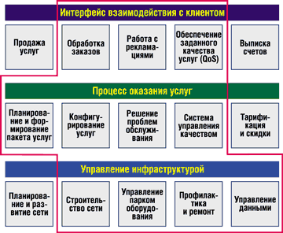
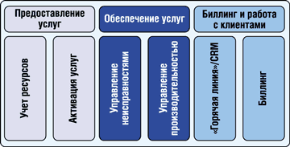
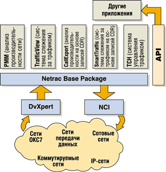
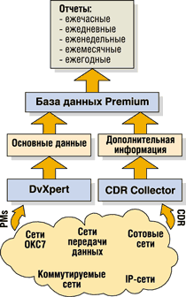

Павел Рудаков,
консультант по аналитике и маркетингу NV Consulting,
pr@nvconsulting.net
Вадим Саякин,
генеральный директор NV Consulting,
svy@nvconsulting.net
Каждый оператор связи или Интернет-провайдер прекрасно знает, насколько сложно соблюдать баланс между тотальной экономией собственных средств и постоянным контролем за предоставляемыми услугами. Незаменимым помощником в решении этой неоднозначной задачи может стать система, способная управлять производительностью (Performance Management, PM). Семейство продуктов Netrac компании TTI Telecom (http://www.tti-telecom.com) заметно выделяется из общего спектра подобных систем - в первую очередь своими функциональными и интеграционными возможностями. Благодаря им данная система управления (СУ) прекрасно справляется с управлением не только сетями связи, но и различными гетерогенными сетями, густо "начиненными" оборудованием разных производителей и использующими самые разнообразные технологии.
Составная модель СУ
В стандартной модели TOM (Telecom Operations Map), описывающей бизнес-процессы оператора связи, предусмотрены три уровня единой интегрированной системы управления телекоммуникационной сетью: технический, технологический и организационный (рис. 1). В идеале TOM предполагает взаимную увязку всех бизнес-процессов в рамках единой системы, но, к сожалению, в российской практике такие ситуации - пока большая редкость.
|  | Рис. 1. Трехуровневая модель TOM.
|
Для лучшего понимания общих подходов к системам управления рассмотрим еще одну модель - FAB (Fulfillment, Assurance, Billing - выполнение, обеспечение и биллинг), которая строится из совокупности функционально законченных блоков, образующих единую интегрированную систему управления телекоммуникационной инфраструктурой (рис. 2). Такие взаимосвязанные блоки обеспечивают работоспособность всего спектра оборудования, гарантированное предоставление сервисов и обслуживание потребителей.
|  | Рис. 2. Функциональные блоки модели FAB.
|
Как правило, СУ базируется на двух основных блоках, вокруг которых выстраиваются все остальные (за исключением, пожалуй, биллинга, обычно стоящего особняком). Эти блоки принадлежат службе обеспечения услуг (Service Assurance) и называются "Блок управления неисправностями" (Fault Management, FM) и "Блок управления производительностью" (уже упомянутый PM).
Задачи управления производительностью оператор в принципе может и не ставить в качестве первоочередных (хотя это выглядит сегодня странно). Нередко основное внимание, особенно в начале эксплуатации, фокусируется на проблемах управления неисправностями. Однако забывать о необходимости развития системы нельзя. Поэтому понимание проблем и принципов Performance Management - подсистемы СУ, которая по сути определяет важные показатели качества предоставления услуг, - может оказать существенное влияние на выбор всей системы управления.
Как известно, процесс управления производительностью основан на сборе и анализе информации о трафике и нагрузочных характеристиках оборудования. Все данные, которые СУ получает от разных устройств, обычно приводятся к единому формату, в котором они и хранятся в базе данных системы управления. Наиболее важное свойство СУ - возможность создания отчетов о производительности, так как это самый эффективный и наглядный способ выяснить причины возникновения сетевых проблем и выявить изменения в "поведении" сети. Кроме того, анализ данных о производительности сети позволяет оценивать качество предоставляемого клиентам сервиса (QoS), а также подтверждать соблюдение соглашений об уровне обслуживания SLA (Service Level Agreement).
В существующих на рынке продуктах функции Performance Management могут быть реализованы по-разному. Все PM-подсистемы различаются в первую очередь по способности работать с разными специфическими устройствами и по способам обработки данных (например, может быть предусмотрена функция сбора данных от телефонных станций и оборудования сети передачи данных). Системы также различаются по возможностям настройки и по источникам интерпретируемых данных (таким, как счетчики сетевых элементов или записи учета вызовов - CDR).
Кроме вышеперечисленных различий, весьма существенным фактором при выборе СУ представляется также организация взаимодействия модуля PM с другими функциональными блоками системы управления. Пожалуй, оптимальным для пользователя сочетанием будет наличие в СУ возможности взаимодействия РМ с блоками управления неисправностями (FM) и управления сервисами (Service Management).
Платформа Netrac
Концепция управления, реализованная в системе Netrac, предполагает, что все области управления взаимосвязаны и представляют собой единую интегрированную систему. Функциональные блоки объединены на основе открытой платформы Netrac Base Package (NBP), и взаимодействие всех приложений в ее рамках осуществляется с помощью программных интерфейсов API. Например, для функционирования подсистемы PM весьма полезны будут данные, которые собираются блоком FM, хотя в общем случае PM может функционировать и автономно. NBP использует реляционную базу данных и легко интегрируется с другими приложениями.
Платформа управления Netrac предназначена для мониторинга, конфигурирования, анализа загрузки и администрирования ресурсов в соответствии со спецификациями и стандартами, предложенными некоммерческим консорциумом TeleManagement Forum. NBP позволяет работать с широким спектром устройств различных производителей (Lucent, Nortel, Siemens, Ericsson, ECI, Cisco и т. д.), поддерживающих технологии IP, Frame Relay, ATM, SDH/Sonet, xDSL, GSM, CDMA, GPRS, UMTS.
Основная "организующая сила" ПO Netrac - программы-медиаторы, которые взаимодействуют с элементами сети. Функции медиаторов реализованы с помощью двух компонентов. Первый, модуль Netrac Device Expert (DvXpert), обеспечивает интерпретацию исходящей информации (от элементов сети), второй, модуль Netrac Command Interface (NCI), предназначен для передачи данных и управляющих команд от платформы к элементам сети (рис. 3). Наличие NCI - одно из самых важных отличий Netrac от продуктов конкурентов.
|  | Рис. 3. Модули управления производительностью платформы Netrac.
|
Оба модуля базируются на работе с наборами правил, которые сам пользователь системы адаптирует к конкретной сетевой среде и установленным в ней сетевым устройствам. Все правила хранятся в открытой базе данных. Чтобы сократить время внедрения системы, разработчики NBP предлагают уже готовую библиотеку интерфейсов и протоколов для связи с элементами сети. Она обеспечивает совместимость с продуктами и оборудованием наиболее известных производителей.
Достоинство платформы Netrac - поддержка различных видов телекоммуникационных сетей. В частности, огромное внимание в NBP уделено анализу голосового трафика и управлению сетями ОКС7.
Взаимные связи
Функции управления производительностью в семействе продуктов Netrac выполняет отдельный модуль Netrac Performance Management Module (PMM), который был разработан в соответствии с ведущими стандартами отрасли и рекомендациями ITU-T.
Основная цель работы PMM - статистический анализ трафика сети. На основе собранных данных модуль создает различные отчеты, а также отображает на карте сети данные о производительности устройств. Анализ базируется на информации о планировании сети, данных структуры трафика и на текущих значениях параметров сети.
Следует заметить, что наряду с PMM в платформу Netrac входят еще несколько продуктов (см. рис. 3), непосредственно связанных с процессом управления производительностью. Так, модуль TrafficView служит для анализа трафика и работает в режиме, близком к реальному времени, модуль Traffic Control Handler (TCH) - для управления трафиком и online-наблюдения при возникновении в сети проблемных ситуаций. Этот модуль обеспечивает передачу управляющих воздействий сетевым элементам и элемент-менеджерам и обычно используется совместно с TrafficView. Модуль CallExpert позволяет с помощью записей учета вызовов (CDR) получить более четкое представление о трафике и производительности сети, а также проанализировать качество обслуживания QoS и проверить данные биллинга. И наконец, подсистема SmartTraffic осуществляет расширенный анализ трафика на основе CDR практически в режиме реального времени.
Модуль PMM поддерживает работу с оборудованием разных производителей и способен функционировать в различных сетях. Упомянутый медиатор Netrac DvXpert позволяет распознавать любые типы сетевых элементов, а также элемент-менеджеров, обеспечивающих взаимодействие с сетевыми элементами. Поставляемая в комплекте ПО библиотека интерфейсов дает возможность интегрировать большое число разнородного оборудования. Кроме того, в Netrac есть средства для разработки новых API. Это упрощает подключение новых устройств и построение сетей. Администратор может автоматически получать от PMM данные о трафике сети и качестве обслуживания, предоставляемом всеми сетевыми устройствами и элемент-менеджерами, просматривать записи CDR и использовать для принятия решения другие источники информации.
PMM служит также для выявления неэффективно используемого оборудования, помогает управлять задействованными ресурсами, обнаруживать ухудшения характеристик обслуживания пользователей и критических ситуаций, а также принимать немедленные меры по их устранению. Заметим, что процедуры корректирующих действий полностью автоматизированы.
Используя программные модули Erlang Calculator и Erlang Matrix, можно получить дополнительную информацию об общем трафике сети, доступности линий связи и уровне обслуживания (Grade of Service, GOS). Подобные вычисления можно проводить как для всей сети, так и для ее отдельных сегментов.
Кроме того, PMM дает полезную возможность сегментировать сеть, используя два типа группировок: постоянную и динамическую. Для первой администратор-пользователь устанавливает параметры постоянной группы, заранее задавая определенное количество входящих в нее устройств. Правила внесения тех или иных устройств в динамическую группу тоже определяет пользователь, но при обновлении конфигурации состав такой группы может автоматически меняться. Для каждой группы сетевых элементов предусмотрена возможность ведения статистики и составления отчетов как для единого элемента, что особенно удобно при необходимости структурирования трафика по видам сервиса.
Дополнительный, но важный источник
Применение систем управления производительностью и наблюдения за трафиком облегчает предоставление сервиса определенного качества, поскольку конечным результатом работы этих систем становится увеличение числа состоявшихся вызовов и более полное задействование всех сетевых ресурсов.
Как уже отмечалось, сбор трафика от различных сетевых элементов осуществляет модуль Netrac DvXpert. Источником данных, на основе которых функционируют модули PMM и TrafficView, служат счетчики, находящиеся в сетевых элементах (например, в коммутаторах). Однако такие характеристики производительности, как объем трафика на разных пунктах назначения, количество звонков, оставшихся без ответа, или общая продолжительность вызовов по группам вызова, иногда нельзя получить непосредственно из коммутаторов. С другой стороны, эти значения могут присутствовать в записях учета вызовов (CDR), которые собираются модулем CallExpert. Передачу этих данных в систему Netrac обеспечивает модуль PM Generator.
Записи CDR предоставляют чрезвычайно ценную информацию, которую можно использовать для таких задач, как мониторинг сети, планирование ее пропускной способности, выявление несанкционированных пользователей услуг, подготовка счетов за услуги, маркетинг.
Сбор CDR-данных позволяет операторам анализировать качество обслуживания в сети, выявлять нештатные ситуации в обслуживании вызовов и гарантировать правильность выставления абонентам счетов за предоставленные услуги, проверяя биллинговую информацию. Во многих системах, в том числе в Netrac, это реализуется путем сравнения данных CDR и информации, полученной из сети OKC7.
CallExpert собирает CDR от различных сетевых элементов, приводит их к единому специальному формату, а PM Generator обрабатывает и направляет эти дополнительные данные модулю DvXpert. Различия между информацией, получаемой непосредственно от счетчиков сетевых элементов и из CDR-данных, легко оценить по типичному перечню получаемых из этих источников параметров (они приведены в таблице). Следует также понимать, что некоторые из перечисленных показателей можно получить только от одного из источников, а некоторые - от обоих.
Типичный набор данных, используемых для работы модулей PMM и TrafficView
| Данные от счетчиков сетевых элементов | Данные из записей CDR |
| Switch | Switch |
| Trunk Group (TKG) | Trunk Group (TKG) |
| Destination* (только Country Code) | Destination (любой Prefix) |
| SS7 Link/Linkset/Routeset | - |
| - | TKG* Destination |
| - | Carrier* Destination |
| - | Origin* TKG |
| - | Origin* Destination |
| - | Call Type |
| - | Service Feature |
| - | Release Cause |
| - | Release Cause* Carrier |
| - | и многие другие... |
| * СDR-атрибут Counters per Destination доступен не во всех типах коммутаторов. | |
Так, измерения по коммутаторам (Switch) доступны в обоих источниках. Очевидно, что любому оператору необходимо знать, какой объем трафика "прокачивает" каждый коммутатор, чтобы оптимизировать трафик и устранить узкие места в сети. Измерения, касающиеся общего числа минут или среднего числа минут в вызове, можно получить или из коммутатора, или из СDR-данных на этом коммутаторе (в атрибуте Total call duration). Но другие измерения, например, реальную загрузку коммутатора, по которой можно судить о достаточности его ресурсов, можно извлечь только из его собственных измерений.
Измерения по магистральным группам (TKG) часто выполняются для определения общего или среднего числа минут в вызове по каждой магистральной группе. Эта информация помогает оператору оптимизировать маршрутизацию вызовов в сети во избежание перегрузок. Данные, получаемые от сетевых элементов, позволяют оценить процент доступных, назначенных и блокированных линий для каждой TKG в данный момент времени и в результате принять решение о необходимости дополнительных групп TKG.
Измерения по назначению (Destination) доступны не для всех типов коммутаторов. Даже когда это возможно, счетчики предоставляют только агрегированную информацию, которая не дает картины распределения трафика по определенным направлениям (например, по городам). В отличие от этого в CDR-записях различные типы назначений основаны на номере вызываемой стороны (called party number), т. е. данные CDR могут интерпретировать любую комбинацию цифр префикса. Показатель "измерения по назначению" очень важен для наблюдения за качественными параметрами функционирования сети. Так, коэффициент занятости линии связи (Answer Seize Ratio, ASR), который в принципе можно получить из обоих источников, предполагает в числе прочего оценку маршрутов по специфическим назначениям.
Очевидно, что в общем случае при реальной эксплуатации сети лучше иметь дело с обоими источниками информации, но далеко не каждая СУ предоставляет такие возможности.
Как работает PMM
В общем виде последовательность технологических операций модуля PMM показана на рис. 4.
|  | Рис. 4. Организация сбора и обработки данных в модуле PMM
|
Сбор данных о производительности сети
При сборе данных о производительности (Performance Measurements, PMs) информация поступает от сетевых элементов, элемент-менеджеров и передающих устройств по заранее определенному расписанию (например, каждые 15 мин). Она накапливается в базе данных PMM, а затем анализируется модулем Netrac DvXpert в соответствии с типом данных (Voice, SDH/Sonet, FR, ATM, IP и т. д.). Если требуется получать информацию о производительности сети не в автоматическом режиме, модуль PMM посылает команду сетевым элементам (NE) и элемент-менеджерам (EM) о начале или окончании сбора данных.
Обработка данных
Накопленная в базе данных информация реорганизуется PMM с помощью описанных ниже процессов.
Нормализация формата данных от различных видов оборудования в сети позволяет привести эти данные к общему виду, который впоследствии используется для анализа и вычислений. Кроме того, пользователь может самостоятельно настраивать процедуру обработки данных и добавлять любые форматы, свойственные различным устройствам.
Агрегация - группировка всех собранных данных по временным периодам. PMM автоматически сохраняет данные для ежечасных, ежедневных, еженедельных, ежемесячных и ежегодных статистических отчетов, используя минимальный объем дискового пространства. Так создается "история сети" - описание ее работы за продолжительный период времени.
Выборочное удаление или очистка базы служит для оптимизации работы PMM. При этом временной период, в течение которого должны сохраняться данные для каждой группы агрегации, задается пользователем. По истечении этого периода информация стирается из базы данных.
Вычисление итоговых данных. Выполняется на основе рекомендаций ITU-T. Данные содержат информацию о времени наибольшей нагрузки сети, усредненных объемах трафика за предшествующие периоды и т. п.
Анализ производительности
Результат операций модуля PMM, характеризующий работу сети, может быть представлен пользователю в виде отчетов: табличного, прогнозирующего и графического, в том числе с отображением топологии и схемы сети. Наряду со стандартными отчетами пользователь может самостоятельно настраивать специализированные процедуры анализа и отображения полученной информации.
* * *
Естественно, функции управления трафиком и производительностью, оперирующие точными данными измерений, - ключ к оптимизации использования всего парка оборудования и к повышению QoS, а именно это обеспечивает рост доверия пользователей к оператору.
Система управления производительностью Netrac компании TTI Telecom относится к категории законченных решений в этой области. Такие решения обеспечивают повышение производительности сети, а значит, и качество обслуживания, причем без добавления нового оборудования. Netrac осуществляет "самодостаточное" управление производительностью сети и возможность постепенного наращивания СУ до уровня полнофункционального решения. Это особенно актуально для российских компаний, которым требуется поэтапное развитие системы управления без прерывания текущих бизнес-процессов.